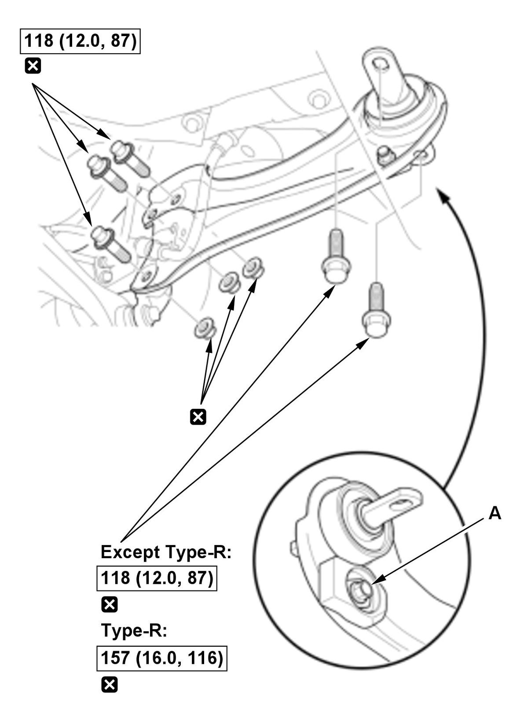

Removal and Installation
NOTE: How to read the torque specifications .
- Vehicle - Lift
- Rear Wheel - Remove
- Wheel Speed Sensor/Electric Parking Brake Harness Bracket Mounting Bolt - Remove
- Trailing Arm - Remove

Courtesy of HONDA, U.S.A., INC.NOTE:
- For some model: Do not loosen this bolt (A) and nut.
- During installation, note these items.
-
- Use the new mounting bolts and nuts.
- Loosely install the nuts and/or bolts to install the bushings, load the suspension with the vehicle's weight, and then tighten the nuts and/or bolts to the specified torque.
- All Removed Parts - Install
1. Install the parts in the reverse order of removal. - Wheel Alignment - Check